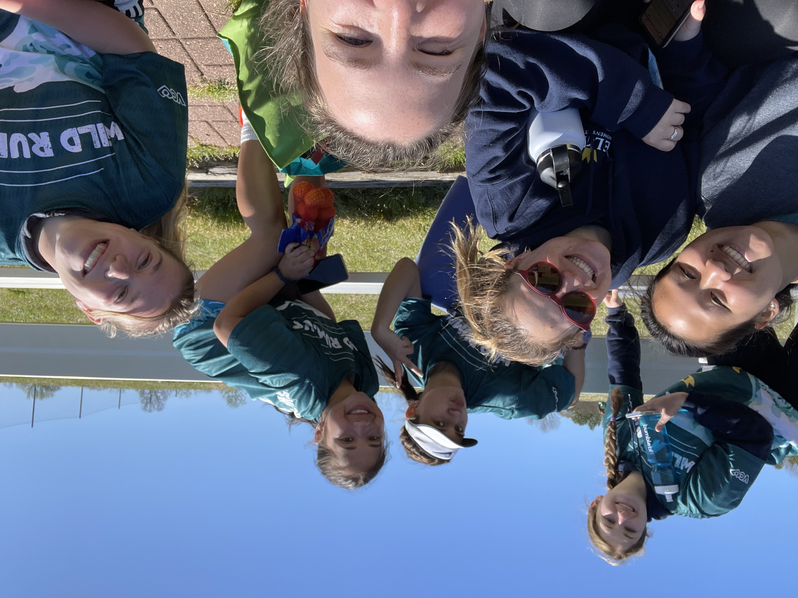
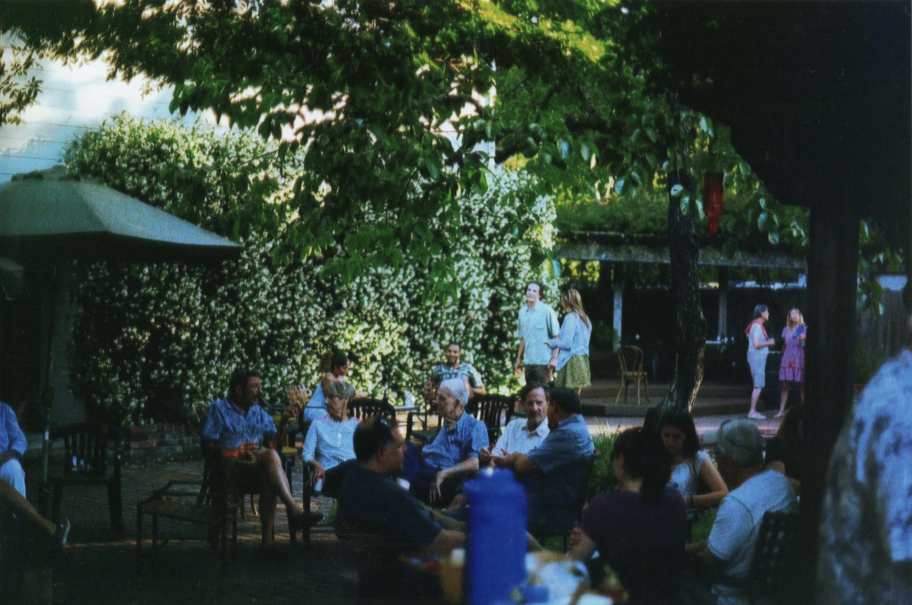

Ultimate Frisbee
I never thought of Ultimate Frisbee as a sport until college. I know theres the college stereotype of 'throwing the disc in the quad'
but didn't think much of it. I am not the vice president on the Elon women's ultimate frisbee team and I love it.
Frisbee is how I have ment most if not all of my friends in college and also how I stay active while being in college.

Photography
I recently found an interest in photography over the summer of 2022. I have always loved taking pictures but I started using my dads old film camera
in the summer and fell in love with it. I recently was trying to figure out what to minor in and I chose photography because I am so interested in it.
My dad is a photographer and he also inspired me to pursue this hobby.
